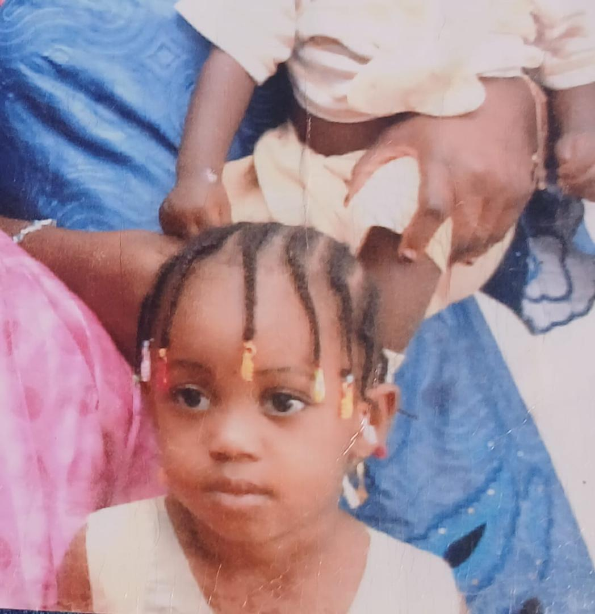
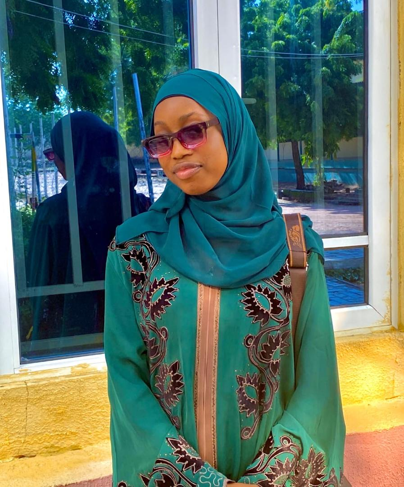
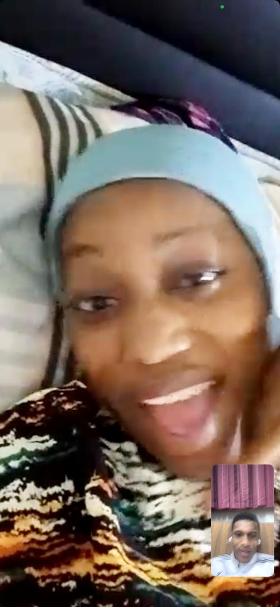
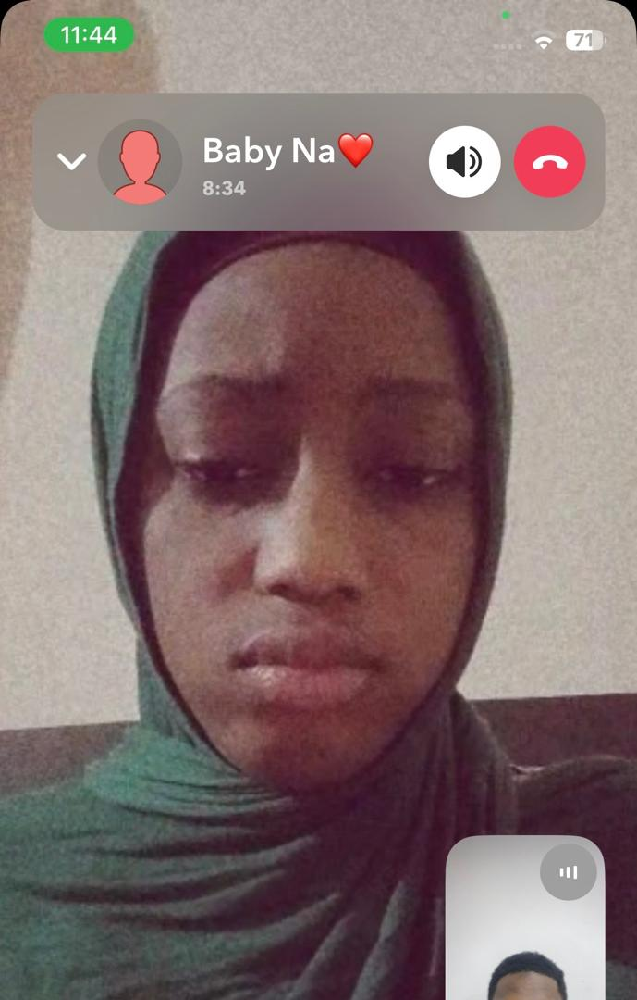
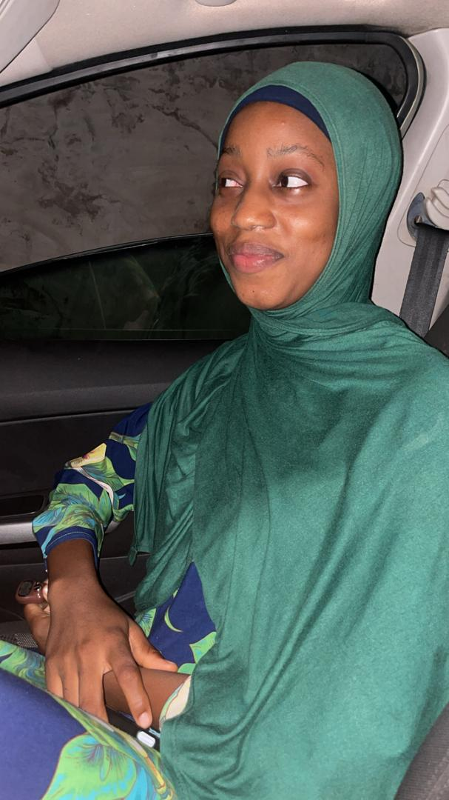

Kinada kyau
Kinada kyau, kuma wannan yana daga cikin abubuwan da nake so a gare ki.
For Baby na
Baby na
I made something little for you...
A few words from me to Baby na
Baby na, ina sonki sosai. Ke kadai, babu kowa. Kuma babu kowa. Kinada kyau, kinada hali mai kyau, kinada komai mai kyau. Nikam ba wanda ya kaini sa'a. In kin rabu dani nikam nayi asara belle, ma nasan bazamu taba rabuwa ba In Sha Allah.
Baby na, ke ce ta musamman
Ga kyau, ga haske kaman baturiya, ga ilimi, ga tausayi, ga hali mai kyau, ga adini, ga komai. Ke kam Baby na, Allah ya hada miki.





Abubuwan da muke tare


Dalilan da nake sonki
Kinada kyau, kuma wannan yana daga cikin abubuwan da nake so a gare ki.
Halin ki mai kyau yana sa ki zama ta musamman a wurina.
Kinada ilimi, kuma ina alfahari da ke.
Tausayin ki yana daga cikin kyawawan abubuwan da suke cikin ki.
Adinin ki da yadda kike da shi yana kara miki kyau.
Ga komai mai kyau a tare da ke, Baby na.
Abin da Allah ya hada
Baby na, sometimes I still think about how everything started. We first met in SS2, back in 2021.
I still remember the first time I saw you. It was during closing time. You were walking with your friends, carrying your Starboy backpack.
I don't know what happened to me that day, but from that moment, something changed. I completely fell in love with you.
Sometimes you meet someone for the first time, but somehow your heart feels like it has known them forever.
The funny part? You didn't love me back. People eventually found out that I liked you, but you refused. You told me that you didn't love me and that you didn't want a relationship with me.
SS2 passed. Then SS3 came... and it was still the same story. 😂
You would be in class, eyeing me and frowning whenever I looked at you - because apparently, you didn't love me. 😂
At one point, you even planned with your friends to come and tell me that you didn't love me. The funny thing is, I found out before you came.
And when you finally came to tell me, I wasn't even paying attention to what you were saying. I was just looking at your beautiful eyes. I was completely lost in love.
Even though you didn't want to talk to me, somehow we still had our little moments together.
One of the moments I'll never forget was when we did Inter-House Sports together as King and Queen.
And honestly... we were the finest. 😂❤️ But how could we not be? Look at you. You're beautiful. And beside you, I was just there trying to survive. 😂
I didn't need you to choose me immediately. My heart had already chosen you.
A lot of people came to me and told me to forget about you. They told me to leave you alone. But I refused. I insisted. I still loved you.
We finished secondary school and went our separate ways. But even then, my feelings didn't disappear.
I still kept following you up and down, trying to get your attention, while you kept telling me it was unnecessary stress. 😂
Then, in February 2024, something happened. You came and talked to me. We chatted for a while... and then you stopped talking to me again.
Honestly, I was even afraid to tell you how I truly felt about a relationship because deep down, I already knew what your answer would probably be. “No.” 😂
But throughout all that time, I never stopped loving you. I never went looking for another girl. I didn't want another girl. I just kept praying.
Then one day, you suddenly decided to chat with me again. But this time, you came to disturb my peace. 😂
You started telling me about another guy who loved you and all that. I pressed my heart, swallowed my feelings, and tried to move on.
But then you also came and told me not to be with another girl... even though you already knew that I still loved you.
Honestly, Baby na, I endured a lot. 😂❤️ Maybe to you, some of those things were just jokes or things you did to make yourself laugh.
But me? I was still there. Still loving you. Still hoping. Still praying.
Somehow, after everything, we started talking again. And I was still in love with you.
Then something I honestly never expected happened. We started a relationship.
Even now, I don't think you completely understand how happy I was. After everything I had gone through, after all the “I don't love you,” after all the people telling me to give up, somehow, you became my girlfriend.
And I was so happy.
I still remember one of the first moments when you came to me crying and told me that you were sick. I didn't even know what to do.
I was new to relationships. I didn't understand everything yet. So I just told you, “I'm sorry.” 😂❤️
Looking back now, I realize how much I've learned since then. We've grown. We've changed. We've had beautiful moments. We've had difficult moments. We've misunderstood each other. We've made mistakes.
And lately, Baby na, I know I've been unfair to you sometimes. And honestly, I'm really sorry.
It breaks my heart knowing that I can hurt someone I love so much. You have been there for me in situations where sometimes I didn't even deserve it. And I want you to know that I appreciate that more than I can explain.
And now... here we are. Almost two years together. Who would have thought?
The girl who once told me she didn't love me, the girl who used to frown at me in class whenever I looked at her, the girl I refused to give up on, is now the person I call Baby na. 😂❤️
Sometimes I genuinely laugh when I think about our story. Because honestly, Allah knows best.
What seemed impossible became possible. What I thought I would never have, Allah gave me. And I am grateful.
What is written for you will find its way to you, even through the longest road.
Our situation isn't always easy. Sometimes we both start thinking about whether everything will work out. Sometimes things become complicated. Sometimes we don't understand each other.
But Baby na, I still believe. I believe that by the grace of Allah, we can make it. I believe that what we have is worth protecting. I believe that the difficult moments don't have to be the end of our story.
Because I don't just love you for how beautiful you are. I love what is inside you too. Your heart. Your character. Your kindness. Your faith. Your beauty. Everything that makes you you.
I don't want a perfect love story. I want ours - the real one, with the difficult days, the laughter, the forgiveness, and the forever we keep choosing.
You are honestly one in a trillion to me.
Ina sonki sosai. Ke kadai. Babu kowa. I don't care about anyone else. My heart has already chosen where it wants to be.
And Baby na, I just want the best for you. In this life and in the hereafter. I pray that Allah protects you, gives you happiness, gives you everything your heart desires, and keeps you close to me.
And In Sha Allah, one day, our marriage day will come. And I pray that it becomes one of the happiest days of my life.
I'll look at you that day and remember the girl with the Starboy backpack, the girl who told me she didn't love me, the girl who made me wait, the girl I never stopped praying for. And I'll probably smile and think: “Look at us now.” ❤️
Baby na, I don't know exactly what the future holds. But I know what I pray for.
I pray for you. I pray for us. I pray that Allah keeps you for me forever.
Allah ya barin ke har abada. And I will love you until the end of my life, In Sha Allah.
Mutuwa ce kawai zata raba mu.
I love you, Baby na. Till eternity. ❤️